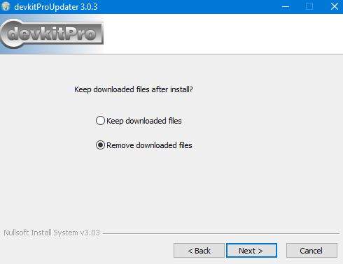
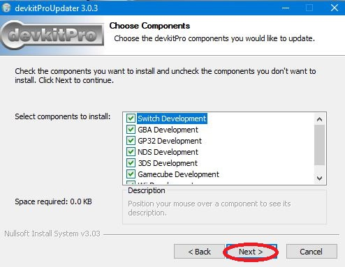

This guide will teach you how to use PA2lib + Simple PA2Lib
Features of PA2lib:
Very small (less than a mb)
Very easy and powewrful
works with latest libnds/devkitarm
Installation is easy for begginers.
Cons:
If you want to migrate from palib/nightfox's lib for libnds, then installation is somewhat complex.
There has been multiple/undefinied definition/references while using PA2lib.
This on beta, so it isn't tested well.
why does pa2lib exist
learning libnds is somewhat complex.
What is Simple PA2Lib?
is a wrapper that simplifies the usage of PA2lib, however, this is not needed, and you can use PA2Lib on your own.
I recommend PA2Lib + Simple PA2Lib since its easier.
Part one, installing stuff.
PA2lib (PA2 is how we are going to call it on the guide) is very simple to install.
go to the github of AerGlass and then go into PA2Lib, or if you are lazy then
Here is the link lol
Download a DS Emulator,
no$gba is the best (gaming version).
next download devkitpro updater.
install it, i guess.



after installing devkitpro, try compiling the libnds examples.
open cmd and type this:
cd C:/devkitpro/examples/nds/hello_world
After pressing enter, type
make
it will compile your code.
Next open it with the emulator (in this case, no$gba), this should display on screen

Now lets install PA2Lib.
if you preffer stability over new features, then use the latest version from releases.
if you preffer new features over stability, then compile the lib yourself.
how to compile the lib (dificult, not recommended)
download the latest version (press code, then download as a zip)
extract the zip and enter to the folder PA2, and then doubleclick the
makelib.bat file, it will compile the lib
Installing for releases (recommended)
Go to releases and download the latest stable source code.
extract the pack with winrar or 7zip, then enter to the template folder
done. Now lets start doing stuff with
C/C++
C stuff
This is how the template main.c file should look like:
/*
PA2lib Template.
This is ready to use, no need for installation or anything else.
Enjoy making games
*/
#include <stdio.h> // Include C
#include <nds.h> //include Libnds
#include <PA_lib.h> //include PA2lib
//main block of the program.
int main(int argc, char **argv) {
SPA_Init(); //inits everything
//loop forever.
while(1) {
scanKeys(); //scan keys
int Held = keysHeld(); //keys variable
if(Held & KEY_START) return 0; //if the start button is held, turn off the console.
SPA_Flush(); //update everything (oam, text, swiwaitforvblank)
}
return 0; //turn off
}
Now, since this code does nothing, we need to draw something to the screen, printf does not work on here, you need to load your own font to do that.
if you want to draw something, you need to convert the image file using GRIT, you must use a 8 bit 256 color bitmap.
making a background
converting
once you make your 8 bit 256 color pallete bitmap, rename it onto bg.bmp, open the grit folder, create a folder called "bmps" and a folder called "Backgrounds" then doubleclick "convert_backgrounds.bat"
it will convert the files. Once it is ready close the cmd window and open the "Backgrounds" folder, if there is a .img, .pal, .map then you made everything fine.
displaying it into the DS
Displaying it is easy.
Make sure that your BG is called bg.img/.pal/.map.
copy the .img, .pal, .map files onto the nitrofs folder inside of your proyects's folder. then edit the main.c file inside the source folder.
#include <stdio.h> // Include C
#include <nds.h> //include Libnds
#include <PA_lib.h> //include PA2lib
//main block of the program.
int main(int argc, char **argv) {
SPA_Init(); //inits everything
SPA_LoadBackground("bg", 256,256,0,3);//loads bg on top screen layer 3
//loop forever.
while(1) {
scanKeys(); //scan keys
int Held = keysHeld(); //keys variable
if(Held & KEY_START) return 0; //if the start button is held, turn off the console.
SPA_Flush(); //update everything (oam, text, swiwaitforvblank)
}
return 0; //turn off
}
void SPA_LoadBackground(const char *dir, int width, int height, int screen, int layer);
lets us load a background, the dir will become the name.
top screen = 0
bottom screen = 1